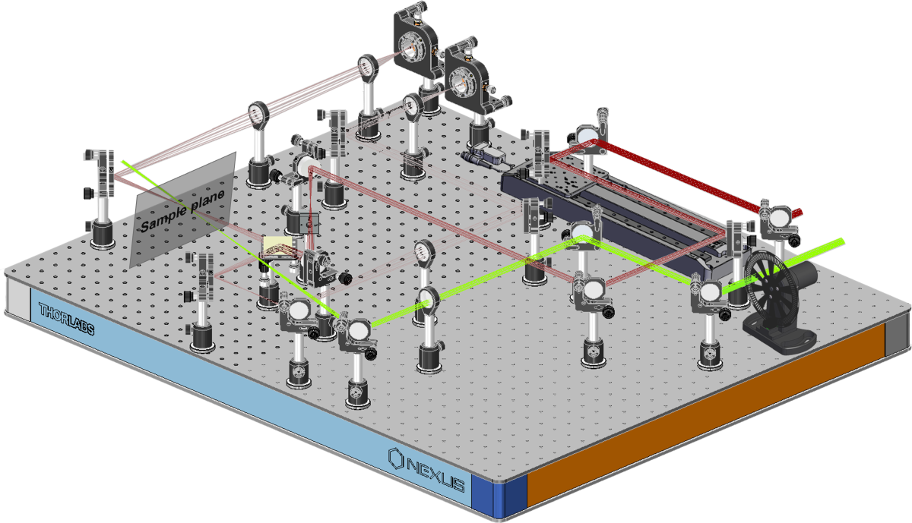
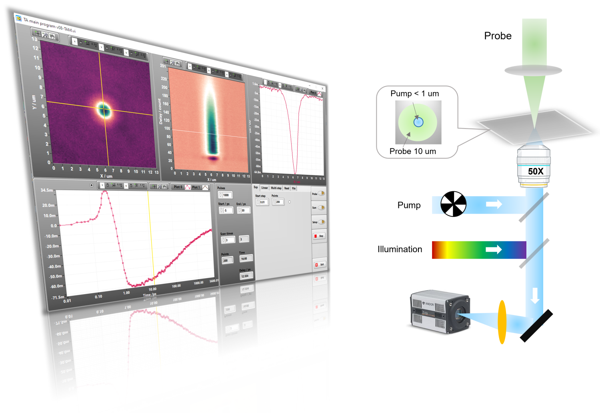
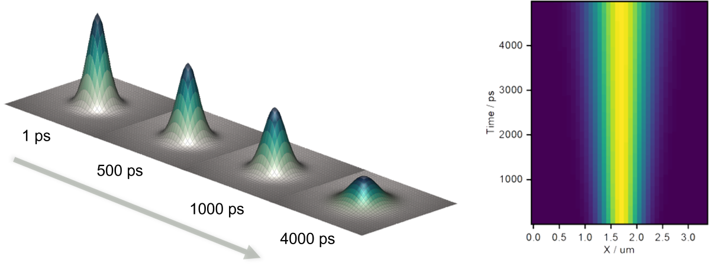

概览
Pulsar是一款自动化飞秒瞬态吸收光谱仪。它设计用于配合各种放大的飞秒激光器使用，包括高能量的钛宝石放大器和高重复率的Yb放大器。结合我们精心设计的相位锁定装置，Pulsar提供了无与伦比的性能和实验便利。
一体化盒式设计
Pulsar专为光学实验室设计，非常适合放置在光学台上。它紧凑的一体化盒式设计采用了先进的锁相技术。这一创新使所有实时信号处理均在硬件端完成，大大减轻了电脑的负担，并提高了系统的可靠性。这种设计不仅优化了实验室空间，还确保了光学实验中的高效数据采集和可重复性能。
TA OEM选项
除了完整的瞬态吸收光谱仪设备，我们还提供TA OEM版本，适用于那些有兴趣定制TA设置的用户。选择这个版本时，您可以根据我们的建议自行购买部件并搭建自己的TA系统，同时，我们将提供定制的仪器自动化软件。通过将我们独特的相位锁定装置集成到TA系统中，控制软件的编程将变得更加简单和可靠。

样品架选项
磁力搅拌器适用于封闭的比色皿（长度 ≥ 2 mm）并且可以配合简单的比色皿架使用。平移样品架可以扫描较薄的比色皿（不易搅拌）、薄膜、晶片等。平移样品架适用于透射型和反射型样品。
TAM扩展

瞬态吸收显微镜（TAM）扩展是一项先进技术，旨在提供无与伦比的时间和空间分辨率。这种增强对于研究材料中激发态的扩散过程至关重要。我们的创新TAM设计自豪地成为首个应用共轭成像技术的产品。这一开创性方法显著提高了成像质量并改善了时间分辨率，为该领域树立了新标准。我们的TAM扩展为深入的材料分析和研究开辟了新途径，提供了对微观层面动态过程的精确追踪。欲了解更多关于我们的TAM扩展如何帮助您的研究及其应用信息，请随时与我们联系。

6/12 ns 时间窗口，可扩展至毫秒级
通过使用直驱高速光学延迟线实现纳秒级窗口。为延迟线光学元件使用定制设计的支架，以提高光束对准的可重复性和整体可靠性。这种延迟线具有高分辨率和高速度特性。高速扫描非常重要，因为它允许在不显著增加实验时间的情况下进行伪随机步进。这种步进对于最小化激光不稳定性和样品退化的影响非常有用。
标准的6 / 12纳秒时间窗口可通过EOS附加组件扩展至毫秒级。
光学延迟线规格：
| 时间窗口： |
6 / 12 ns |
| 分辨率： |
14 fs |
| 最小步进尺寸： |
2.8 fs |
| 最大速度： |
>10 ns/s |
| 加速度： |
> 260 ns/s^2 |
| 光束指向漂移： |
< 10 um 超过 6 ns 延迟范围 |
探测路参考光选项
Pulsar提供第二路探测光（参考光）的选项。在这种情况下，探测光束在通过样品之前被分成两路。一路光束穿过样品，另一路则直接送至参考光光谱仪，用于监测探测光束强度的波动。这种方法的主要优势在于，它允许用户在较少的平均激光脉冲数下实现指定的信噪比。该方法推荐用于重复率较低和/或易于光解的样品的实验中，因为这些实验中激光脉冲的数量受到严格限制。
尺寸
Pulsar设计用于适应光学实验室，并且最适合放置在光学台上。它的宽敞设计为客户提供了多种可能性，以实施一些自制的设计实验。

文档
想获取更多相关文档，请与我们联系。我们还提供了数据处理软件，使结果可视化快速且准确。